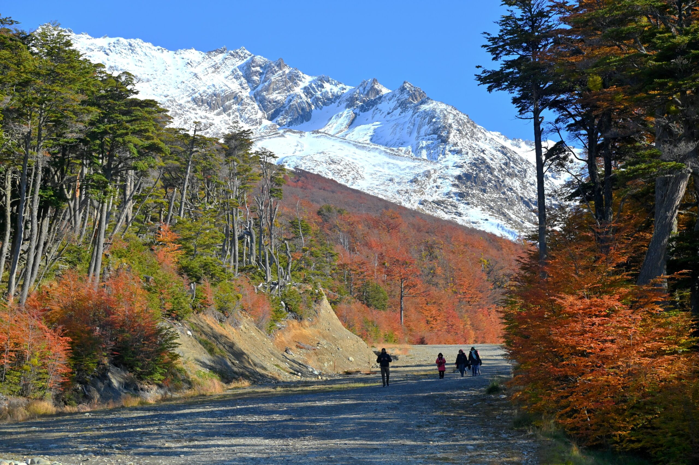
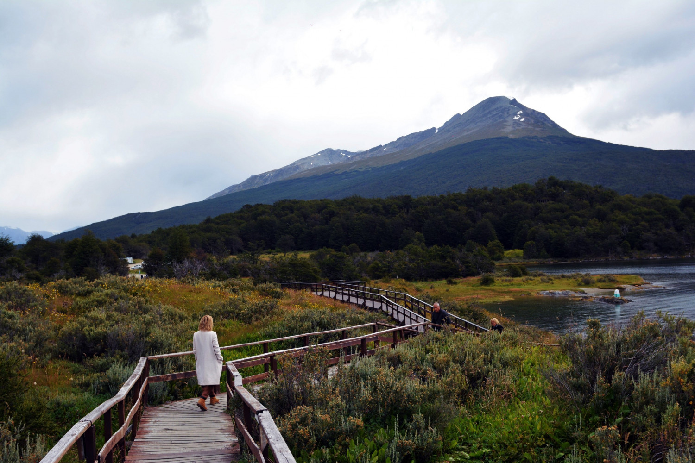
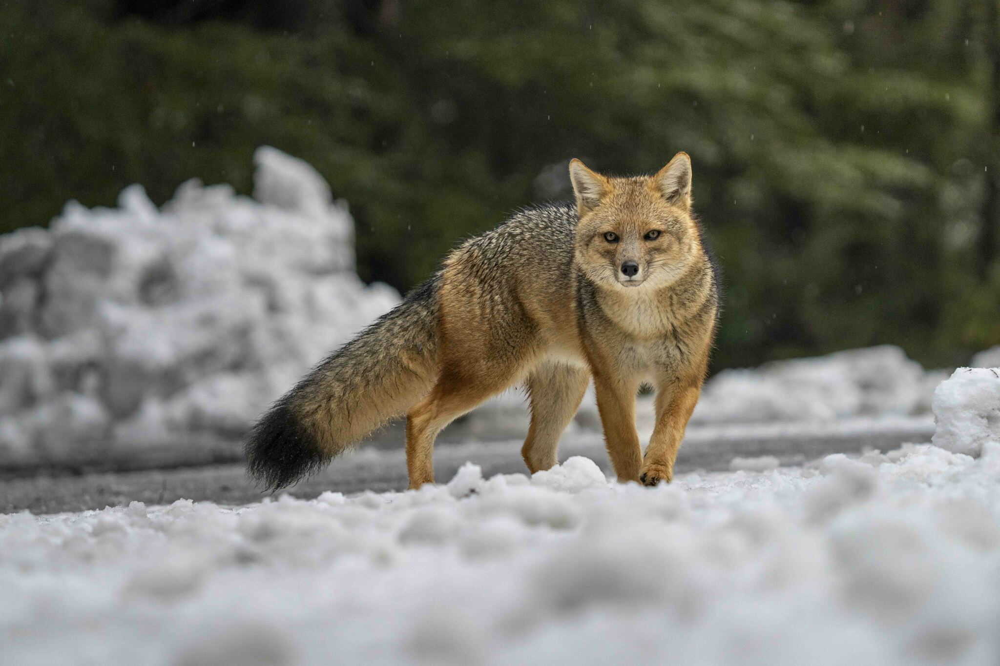
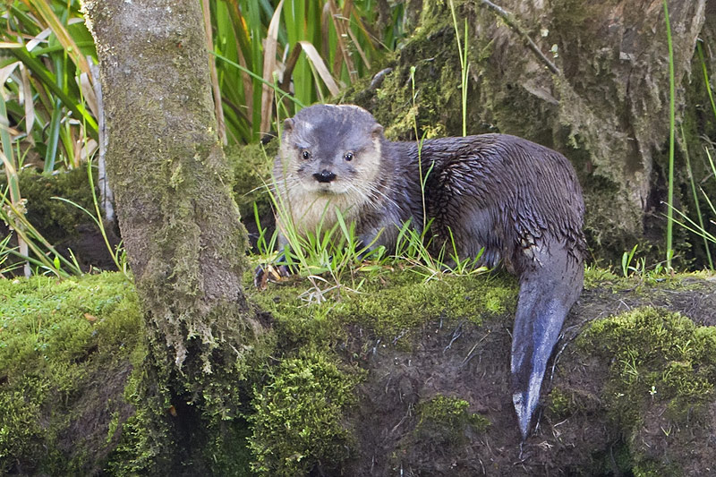

Bienvenido a la Reserva de Tierra del Fuego
Descubre la belleza de nuestra flora y fauna. Conoce más sobre las especies que habitan en este hermoso lugar.


Ubicación del Parque Nacional Tierra del Fuego
¿Por qué donar?
Tu contribución ayuda a preservar este maravilloso ecosistema. Cada donación cuenta para mantener el
hábitat de estas especies y fomentar la educación ambiental.
Especies Destacadas

Zorro Colorado Fueguino

Huillin